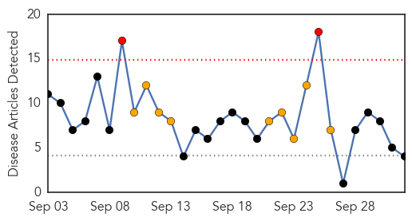
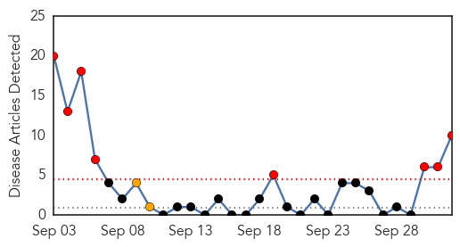
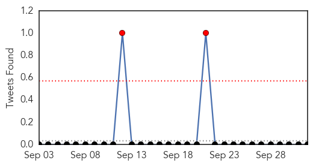
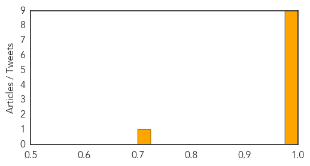

Dengue Fever
30-Day Web Trend
2 alerts, 9 warnings

30-Day Twitter Trend
0 alerts, 2 warnings

Article Locations
Article Confidences

Top Articles:
Top Tweets:
-
No tweets found for Oct 02, 2014
MERS
30-Day Web Trend
8 alerts, 2 warnings

30-Day Twitter Trend
4 alerts, 0 warnings

Article Locations

Article Confidences
Top Articles:
- 1.000
- Reeling from Ebola, WHO Warns of MERS Risk to Africa
- 1.000
- Reeling from Ebola, WHO warns of MERS risk to Africa
- 1.000
- Reeling from Ebola, WHO Warns of MERS Risk to Africa
- 1.000
- Reeling from Ebola, WHO Warns of MERS Risk to Africa
- 1.000
- Reeling from Ebola, WHO Warns of MERS Risk to Africa
- 1.000
- Reeling from Ebola, WHO Warns of MERS Risk to Africa
- 0.999
- WHO warns of MERS risk to Africa, Others news, Health News, AsiaOne YourHealth
- 0.999
- Notification of confirmed case of MERS-CoV in Austria
- 0.990
- Austria MERS case details released
- 0.721
- Haj app offers information on infectious diseases
Top Tweets:
-
No tweets found for Oct 02, 2014